Only the existing replacement designs. Each row compares equal-time silence / bass-only / mid-only / high-only at default gain and nonzero Motion Speed. Short 0.8-second loops show two real weak input pulses; the cut back to frame zero is a review loop, not a renderer discontinuity. Camera input is a deterministic moving chart. No physical microphone, projector, or user recording was available.
AudioContext oscillators → production AudioManager / AnalyserNode → canonical normalization and replacement-only support → real controller engine, schema validation and default delayed store → p5 Canvas/WebGL. BEFORE uses the actual files from 9f707fe, not an imitation. The other sliders are zeroed to isolate each mapping.
Signal findings, mappings, validation and limitations · Full geometry / temporal metrics
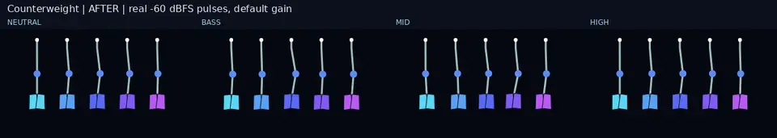
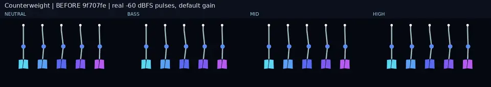
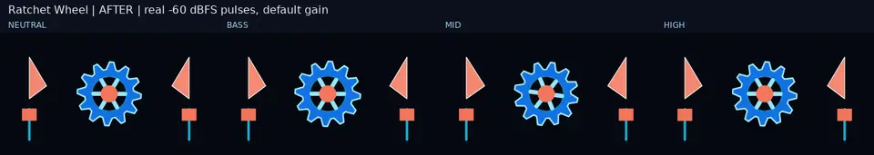
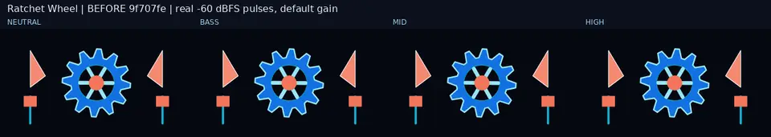
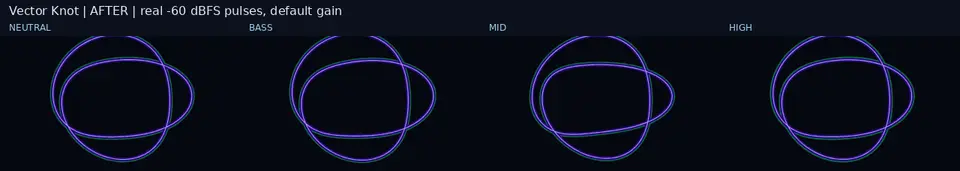
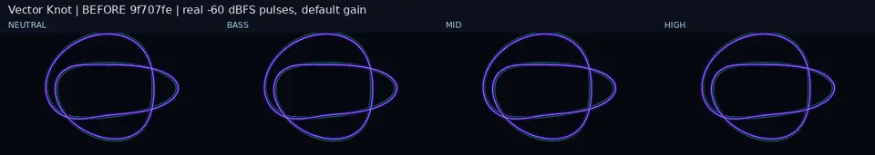
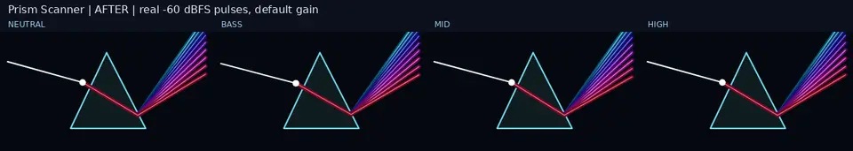
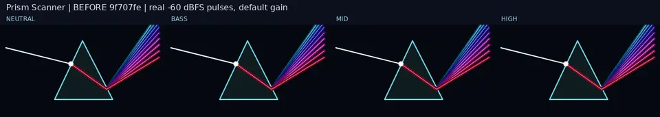
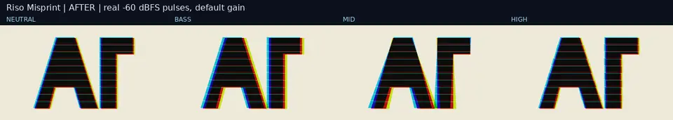
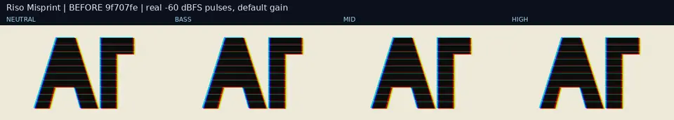
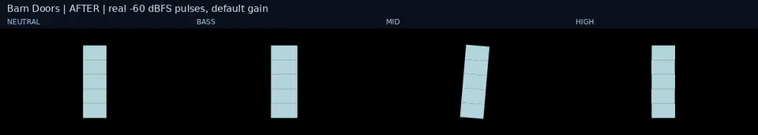
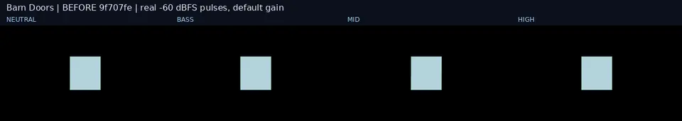
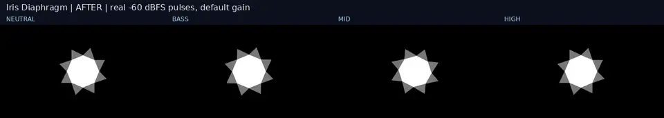
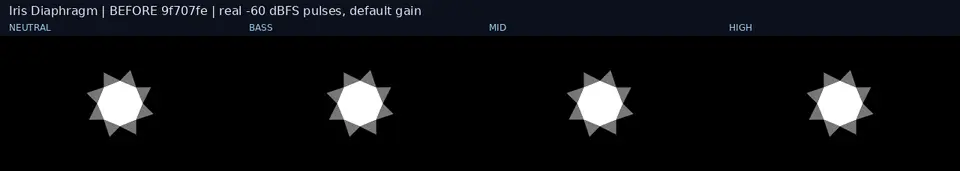
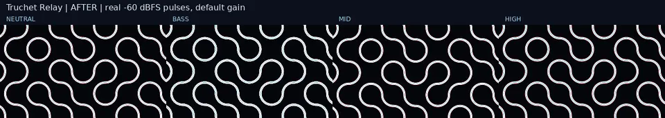
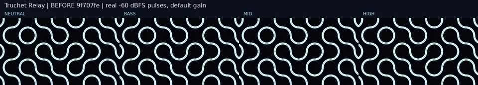
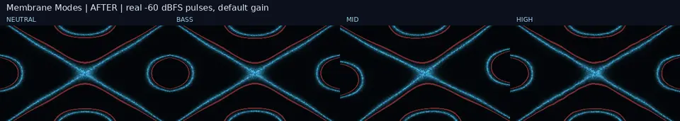
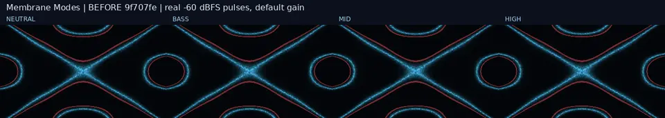
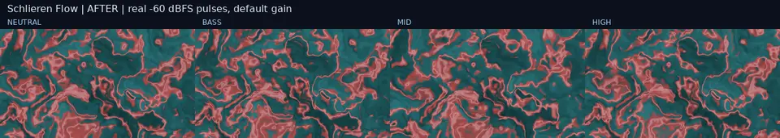
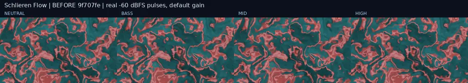
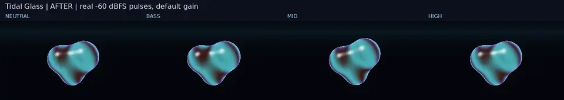
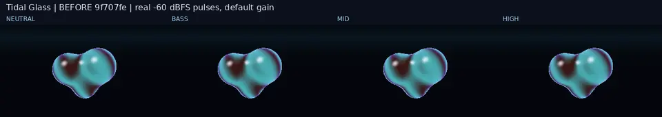
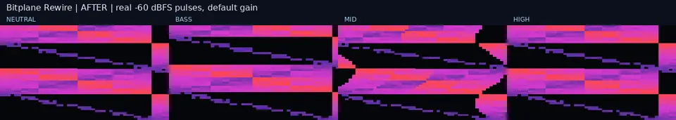
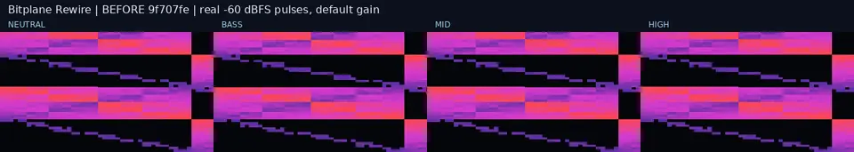
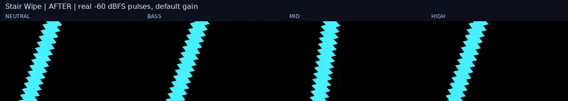
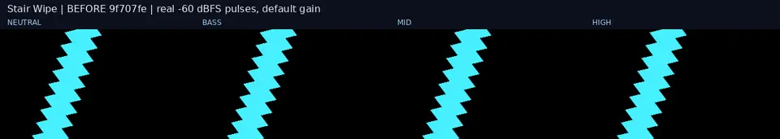
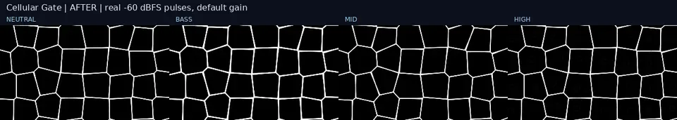
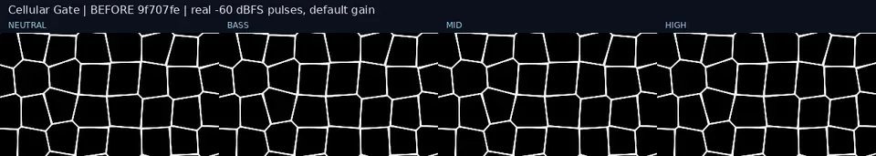
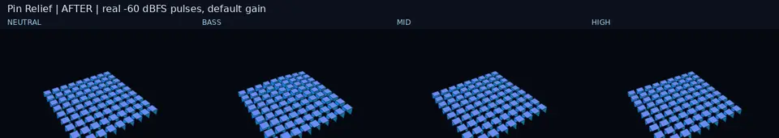
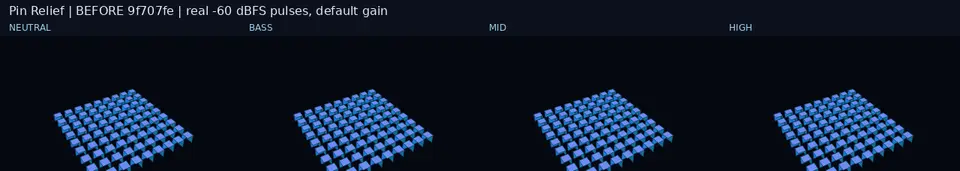
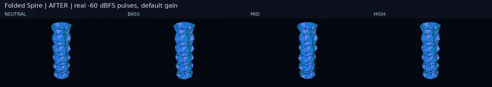
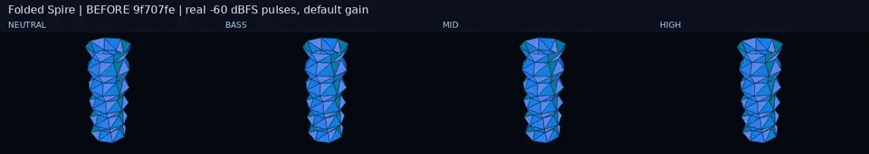
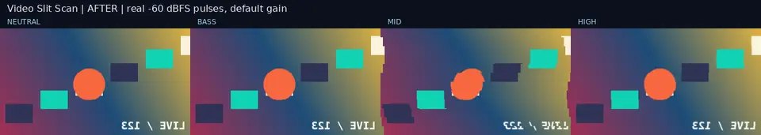
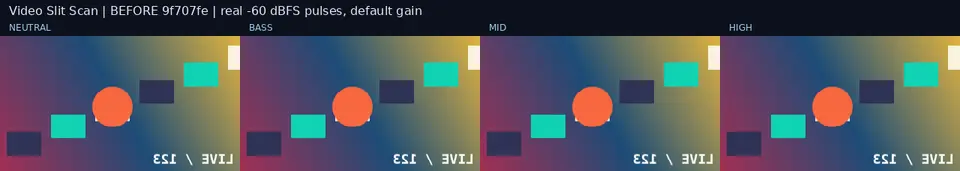
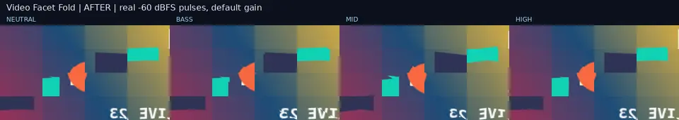
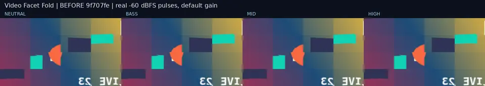